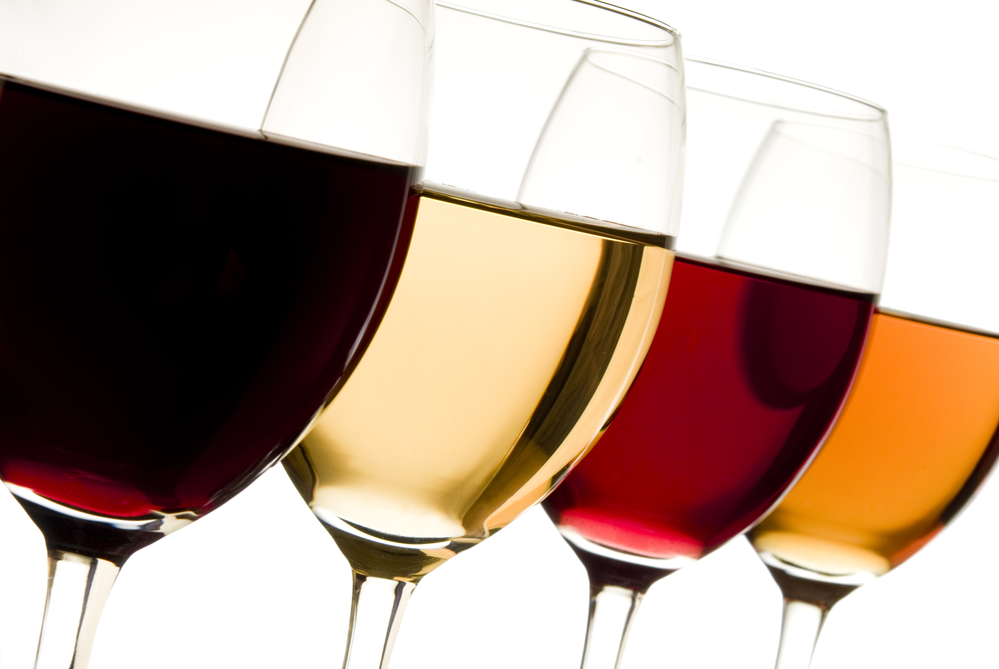
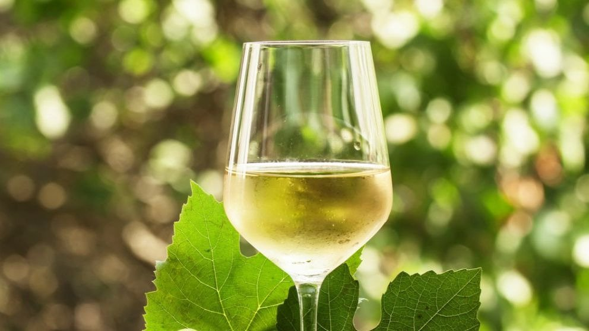
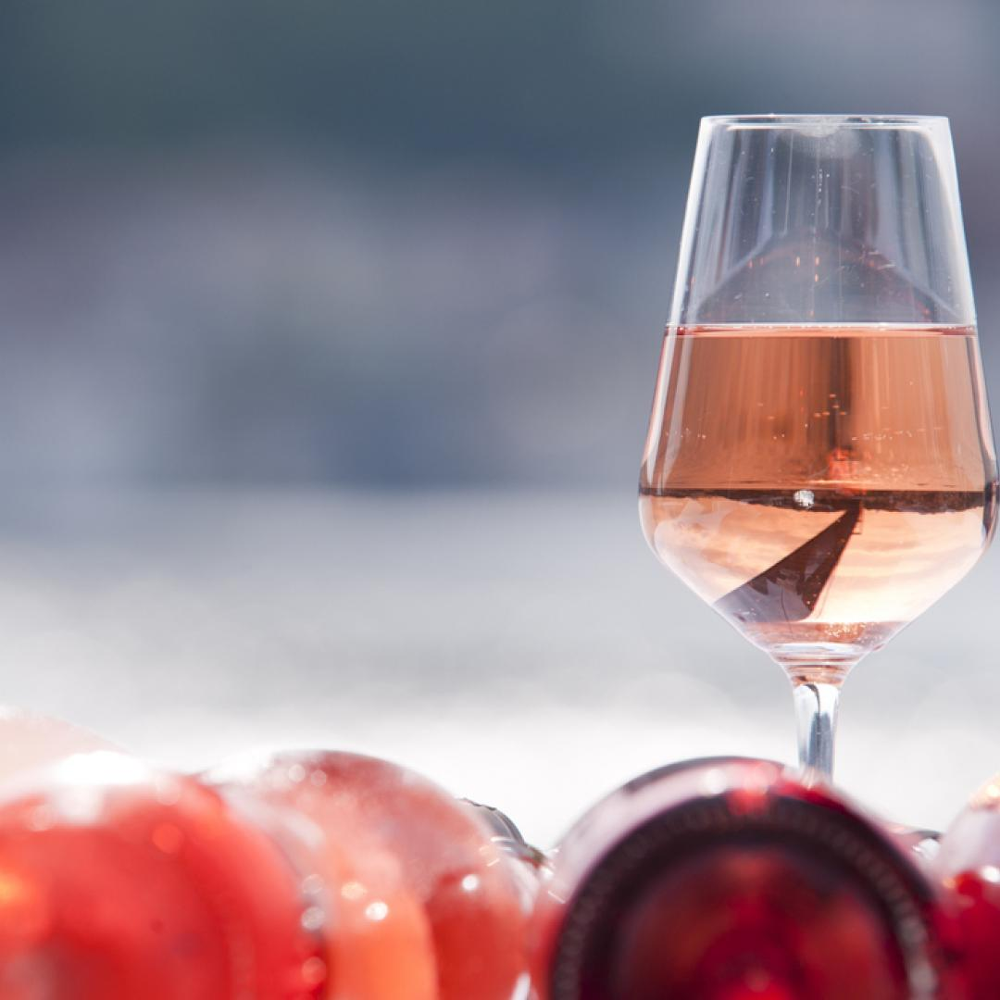
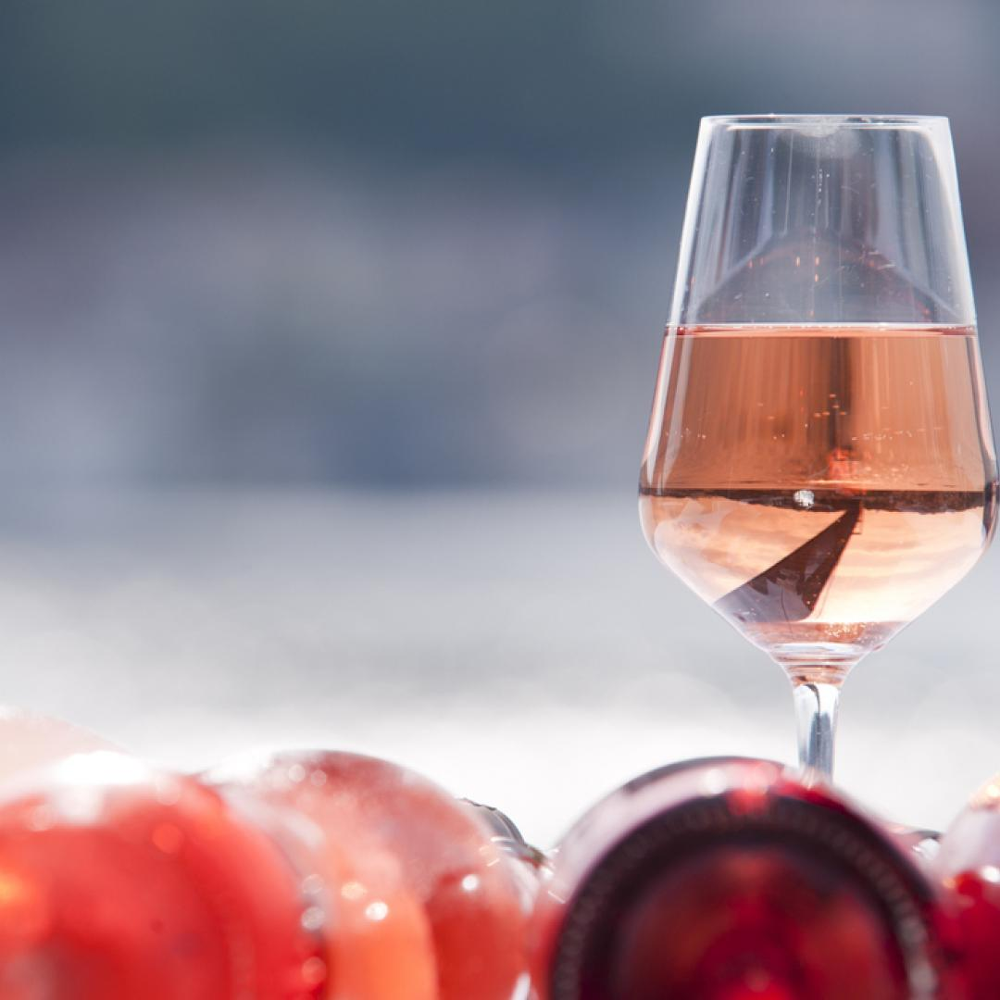
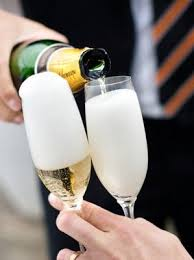
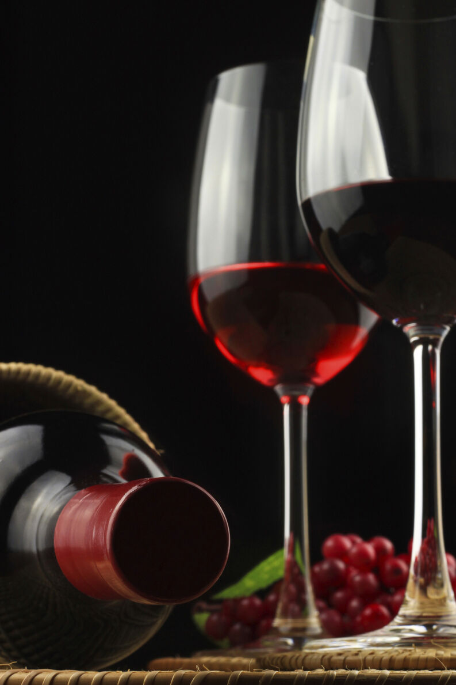
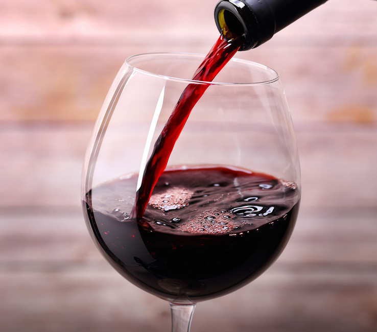

El mundo del vino

En esta parte se te dará a conocer los tipos de vinos que existen
Vino y más vino |
Existen 4 grupos de vinos los cuales tienen diferentes clasificatorias los cuales son los siguientes: |
Vino Blanco

Secos y ligeros: Vinos frescos y amargos, sin cuerpo, ocasionalmente añejados en barriles de roble, no suelen ser buenos para envejecer.
Amplios y secos: Tienen más cuerpo y pueden envejecer en bastantes casos en barriles o botellas. Aunque prácticamente son secos pueden tener un poco de dulzura.
Concentrados y secos: Son más compuestos y con más cuerpo, mejoran si son añejados en barriles y botellas.
Aromáticos: Son los derivados de algunas variaciones que se destacan por sus aromas, aun siendo semisecos o secos.
Semisecos: Sin ser dulces, son los envasados antes de que todo el azúcar se haya transformado en alcohol.
Licorosos y dulces: Intensamente concentrados, complejos y con cuerpo. |
Vino tinto y rosado
  
Rosados: Vinos frescos, rara vez envejecen bien y básicamente se les distingue su mayor o menor dulzor.
Frutados, ligeros, no envejecidos: Casi todos los vinos tintos tienen una sensación seca, pero hay muchas diferencias entre ellos, basadas en su consistencia y astringencia.
De cuerpo medio: Contiene una amplia cantidad de vinos de calidad media y algunos de gran calidad que incluso pueden ser de guarda.
Intensos y concentrados: Agrupa los vinos tánicos, de aromas fuertes, muy frutados habitualmente y que suelen envejecer bien.
De guarda: Suelen ser vinos de las mejores cosechas de regiones no tan conocidas que se han dejado envejecer en botellas. Tienen una alta consistencia, cuerpo y su sabor mejora con el tiempo, antes de entrar en decadencia.
Especiales: No son frecuentes, y suelen ser licorosos, dulces, entre otras cosas. |
Vinos espumosos

Ligeros frutados: Hay muchas cosas que difieren entre los espumosos en cuanto a calidad y estilo. Es el modelo del Cava español y el Prosseco italiano.
Finos, intensos: Es el modelo del Champagne francés que habitualmente es muy llamativo para el público.
Ligeros y aromáticos: Son menos conocidos pero muy dulces, por ejemplo, los moscateles italianos. |
Vinos dulces y especiales
 
Generosos: Tienen en común la adición de alcohol, que se denomina encabezado, y la crianza en madera, lo que les da un carácter fuerte, denso, complejo.
Fermentación parcial: Se realiza una fermentación incompleta, pero se incrementa el grado con la adición posterior de alcohol vínico.
Mistelas: Aunque se le llama vino, en realidad no lo es, porque no se realiza una fermentación, sino que son una combinación de mosto con alcohol. La bueno de este método es que considera al máximo los caracteres frutales, pudiendo incluso envejecer.
Vendimia tardía: Tienen un sabor dulce porque se demora al máximo la cosecha de modo que la uva tenga una gran acumulación de azúcar por sobre-maduración, de modo que no se pueda fermentar de forma completa y, el vino conserve parte del azúcar.
Tostados y pacificados: Después de la cosecha, las uvas se deshidratan (en el sol o en espacios muy secos y calientes), hasta que la pérdida de agua hace crecer la densidad de azúcar haciendo muy compleja la fermentación, de modo que requieren un añadido de alcohol vínico. |


©2020. Todos los Derechos Reservados |Valeria Estrada|
|